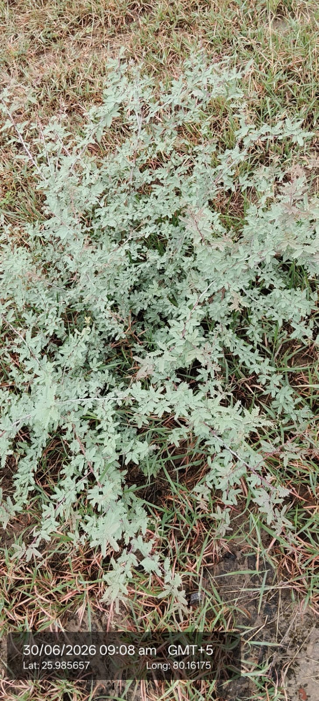

Visual record01 photographs

| Scientific name | Prosopis juliflora |
|---|---|
| Family | Fabaceae |
| Category | Trees |
Habitat & Growing Conditions
- Native to Mexico, Central and South America. Now naturalized across India
- Very common in UP including Kanpur area in your coordinates. Found in wastelands, roadsides, degraded lands, and dry areas
- Thrives in tropical to subtropical arid climate. Extremely drought, heat, and salinity tolerant
- Needs full sun. Grows in poor, sandy, rocky, saline, and alkaline soils where nothing else grows
- Deciduous shrub/small tree, 3-10 m tall. Leaves are bipinnate with small leaflets like in your photo. Stem is reddish with sharp straight spines
Economic Importance
- Fuel & Timber: Major source of firewood and charcoal in dry areas. Wood is hard and termite-resistant, used for fencing and tools
- Fodder: Pods are rich in sugar and protein. Used as cattle and goat fodder. Leaves used during drought
- Excellent for wasteland reclamation and soil binding. Nitrogen-fixing tree. Used for windbreaks and controlling desertification
Medicinal Importance
- Bark, leaves, and gum used in folk medicine for wounds, skin diseases, and diarrhea. Note: Consult a healthcare professional before any medicinal use
Field Notes
- Flowers give good honey. Gum used in some industries. Also considered invasive because it spreads fast and outcompetes native plants